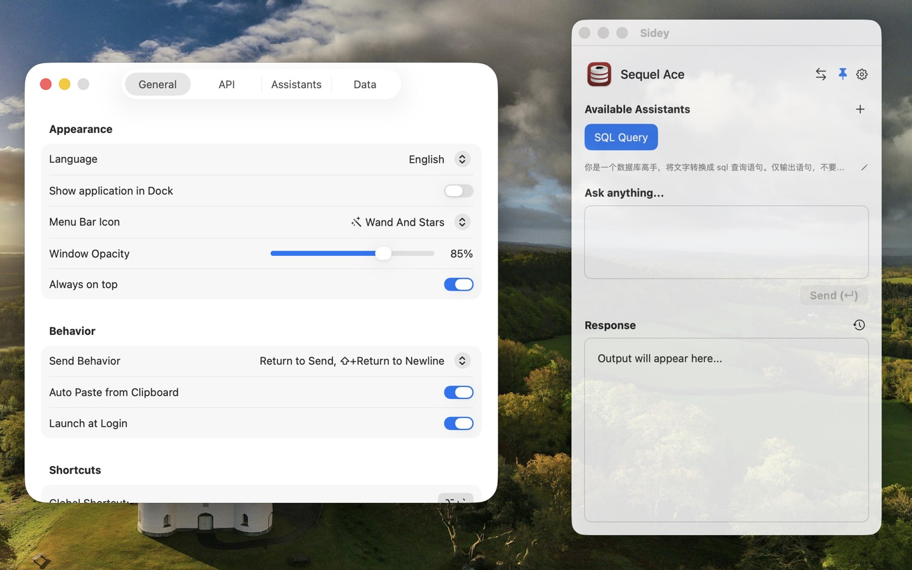
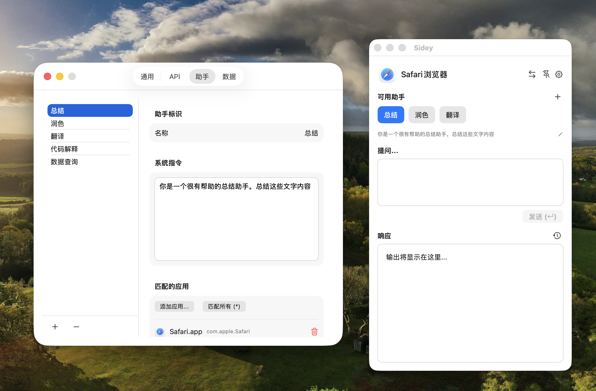

Your Intelligent macOS Sidekick
你的智能 macOS 助手 - 旁白
A lightweight, context-aware AI assistant that understands your workflow. Summon your sidekick with a shortcut and get help instantly.
一款轻量级、场景感知的 AI 助手。一键唤醒，它能实时理解你的工作上下文并提供智能建议。


Context Awareness
场景感知
Automatically detects the frontmost application and suggests relevant prompts tailored for your current task.
自动检测当前活动的应用程序，并根据你正在处理的任务推荐最相关的 AI 指令。
Auto Assistant Creation
自动生成助手
AI automatically designs professional personas like "Code Auditor" (Serious) or "Creative Editor" (Lively) based on your active application.
AI 根据您当前正在使用的应用，通过“严肃型”或“活泼型”两种人设及其对应风格，为您自动设计最贴切的专属 AI 助手角色。
Global Hotkey
全局唤醒
Summon your assistant instantly from anywhere with a customizable keyboard shortcut. Fast and fluid.
通过可点击或自定义的全局快捷键随时随地呼出助手。极速响应，无缝衔接。
iCloud Sync
iCloud 同步
Keep your assistants and settings seamlessly synced across your devices via your Apple ID.
通过 Apple ID 在您的多台 Mac 之间自动、安全地同步设置与助手指令。
Customizable Prompts
高度自定义
Create different AI personas for specific apps (e.g., Code Review for Xcode, Summarize for Safari).
为不同的应用创建专属的 AI 角色。Xcode 里的代码审计，Safari 里的内容总结，随心定制。